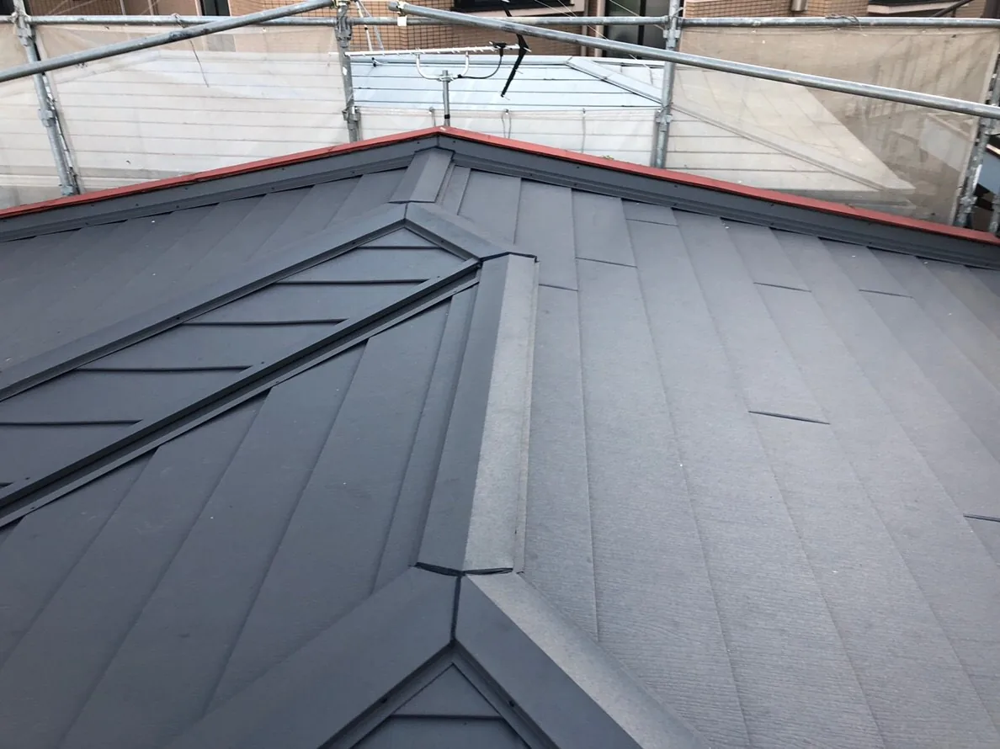

OONUMA SHOKAI JOURNAL2025.03.13株式会社大沼商会急な雨漏り、すぐ直します！ 「天井にシミが…」「雨のたびにポタポタ音が…」そんな雨漏りの悩み、放っておくと大変なことに！ 早めの対策が肝心のため、大沼商会では雨漏りの原因をすばやく特定し、必要な補修をスピーディーに行っています！ 「急な雨漏りですぐ直したい！」という方は、お気軽にご相談ください！ 2025年03月13日公開の記事です。内容は掲載当時のものです。